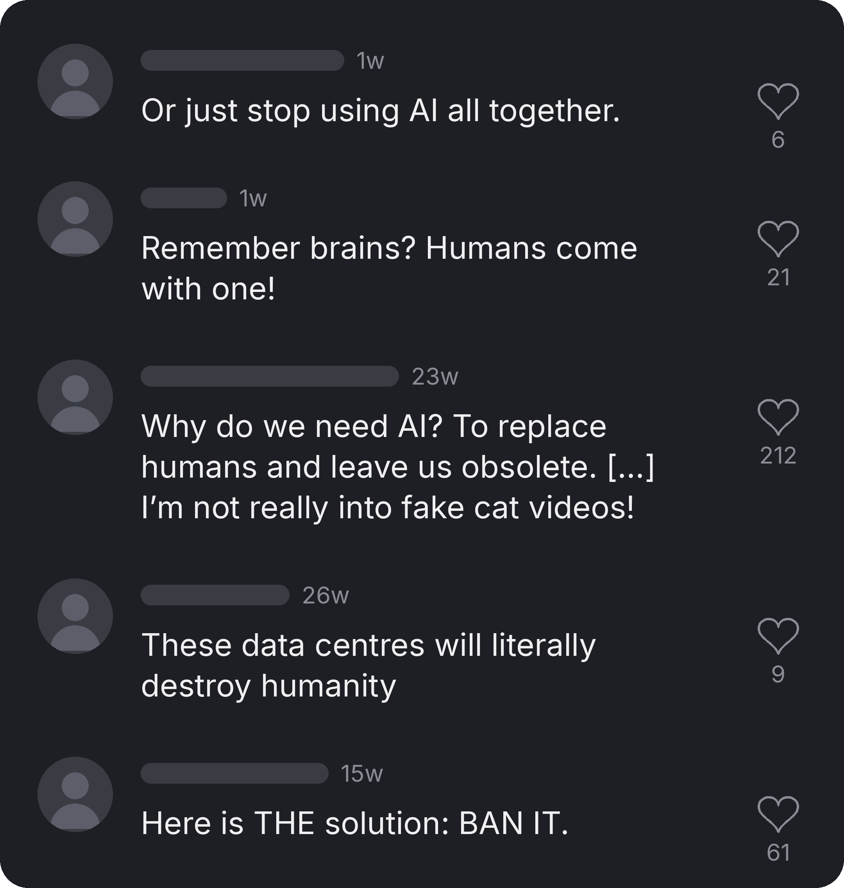
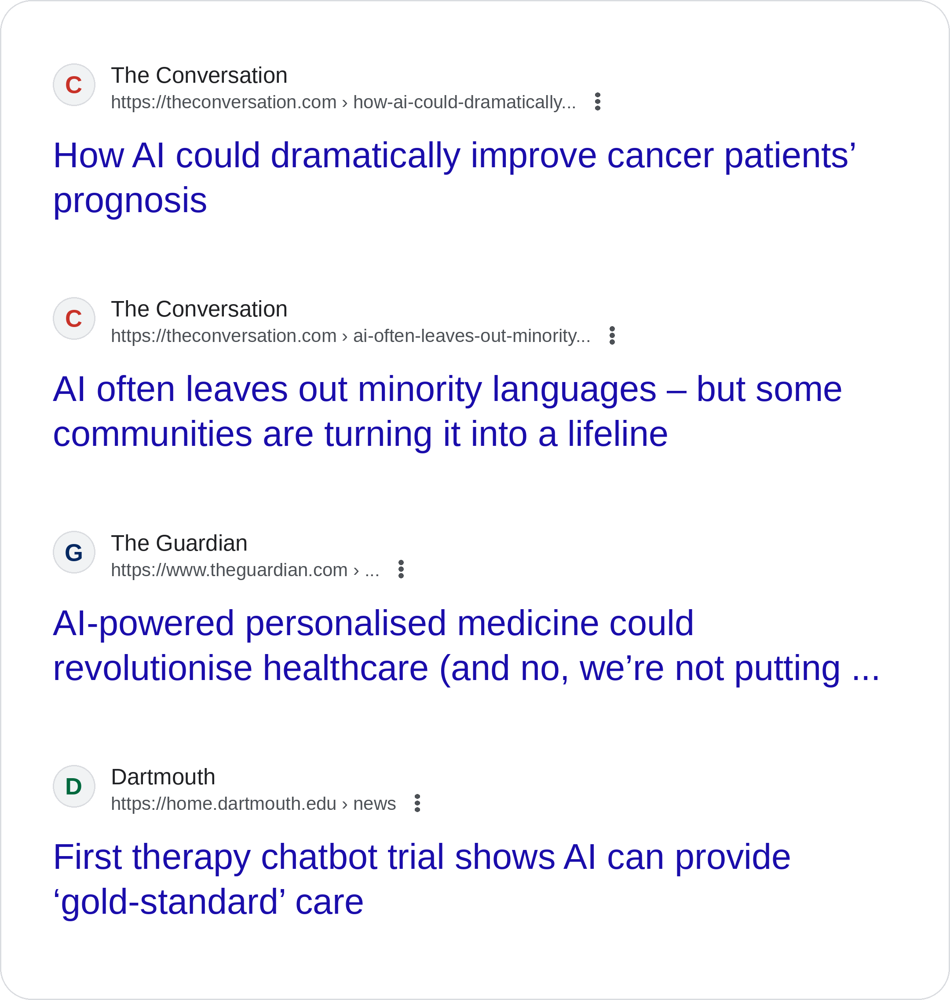

Understanding User Acceptance of
AI‑Based Mental Health Tools
AI Has a PR Problem
Why this research matters


The Gap
- Only 1 in 2 Australian children with a mental health problem seek help.
- Fewer than 1 in 3 receive evidence-based treatment.
- Our question: if we build these tools, will people actually use them?
Johnson et al., 2016

Will People Use It?
Method and results
186
Australians, online survey
- 95 adults rating AI for their own mental health
- 91 parents/carers rating it for a child aged 4–17
- Each rated a general-purpose tool (e.g. ChatGPT) and a bespoke, clinician-approved tool
Attitudes and intentions (1–7 scale)
Despite the PR problem, people were fairly open, and adults and parents responded almost identically.
Bespoke tools preferred
Seen as more useful and more trustworthy than general-purpose tools.
With humans in the loop
Trust didn't replace oversight. People wanted more of it.
Not what the comments say
Usefulness and ease of use drove attitudes. Prior AI use mattered most.
Take-Home Message
Implications
People will use AI for mental health care when it's useful, trustworthy and familiar.
-
1
Lead with usefulness
Show people clearly what the tool does for them.
-
2
Build in human oversight
Users expect it, even for the tools they trust most.
-
3
Support first use
A promising place to start, though we can't yet say which way the link runs.
Get in touch Cathy Macpherson · cathy.macpherson@mq.edu.au